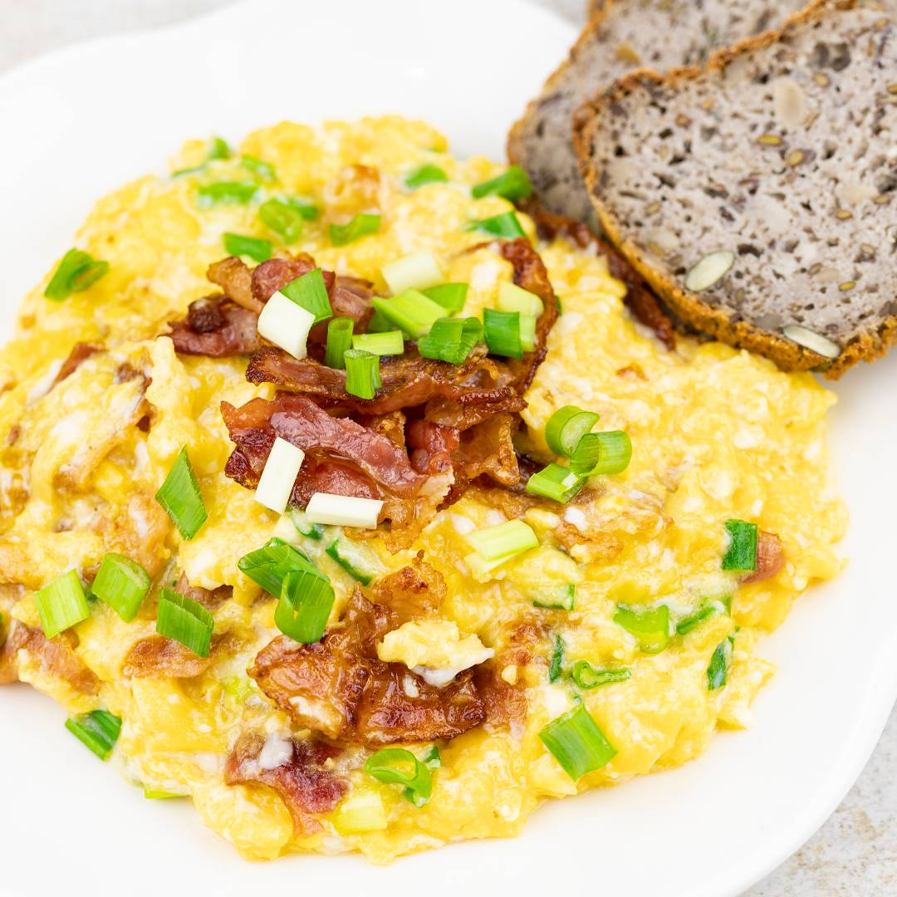

Powrót do strony głównej po więcej przepisów
Śniadanie bez jaj to nie raj

jajka na maśle z kabanosami to najbardziej testosterogenny posiłek jaki insnieje
jak dodasz do tego szpinak to juz w ogóle
Sposób przygotowania
- na rozgrzana patelnie kładziesz kawałek masła
- dorzucasz kabanosy które lekko się wytopiąi jajka mozesz delikatnie mieszac żeby nie przywarły
- voila
składniki
- jaja
- kabanosy
- odrobina masła
(ilość potrzebnych składników zależna od stopnia głodu)